Every screen, and what makes it alive
Captured from the current build on an iPhone 17 Pro simulator with Game Center turned off, which is why the presence line reads "Game Center is off in this build." On a device signed into Game Center those lines are real counts. The look is deliberately restrained: near-black, system type, one hero number per screen, mono readouts for XP. The game shows in small doses.
Home: the lobby
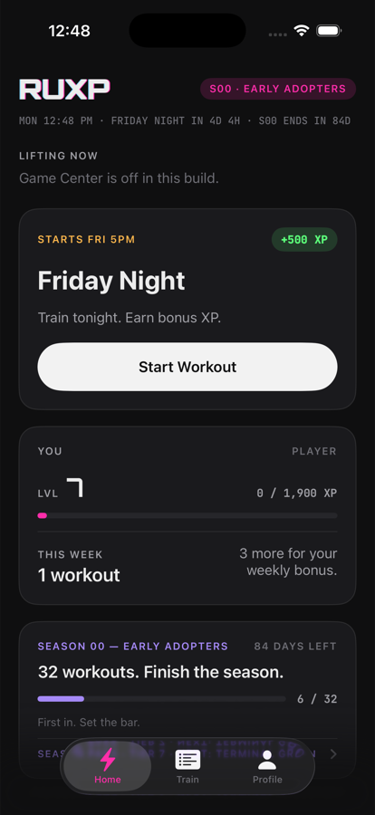
Answers four questions in one glance: who is training right now, is anything happening, what level am I, should I start lifting.
- Clock line.
MON 12:48 PM · FRIDAY NIGHT IN 4D 4H · S00 ENDS IN 84D. Refreshes every 20 seconds. When a Live Ops rule is on it appears here too. - LIFTING NOW. The big number is players who pinged an active-workout board in the last 15–30 minutes. Zero reads "Nobody's on right now. Be first."
- Event card. Live ritual, else the next one with its start, else the season theme. The border turns neon when live.
- YOU. Level bar and this week's count with the weekly-bonus line. Your Season Pass badge and name color show next to your name.
- Season card. Workouts toward the goal, days left, current pass tier. Tap to open the pass.
RUXP/Views/HomeView.swift
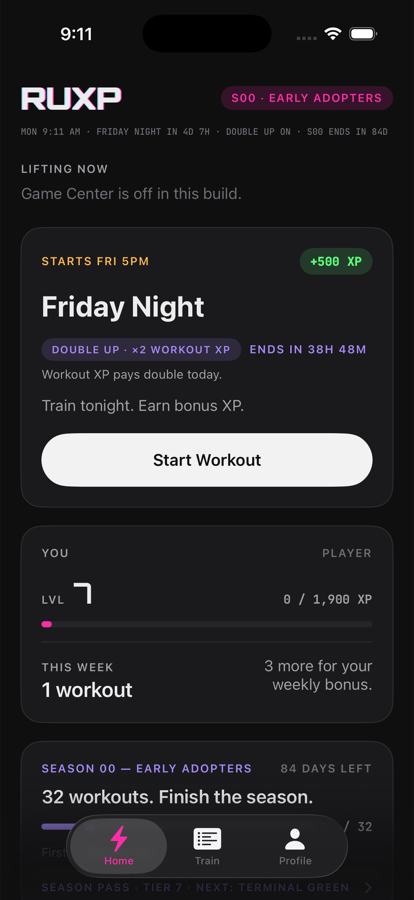
With a rule on. A Live Ops rule rides on the event card as a violet tag with its effect and its window, plus one line of copy. No new screen: rules are meant to be cheap.
The clock line adds DOUBLE UP ON. This capture used a local test calendar; the real rules are PR WEEKEND and CONTINUE? for S00, then NIGHT SHIFT, FINAL BOSS, and CONTINUE? for S01.
Crew: someone is expecting you
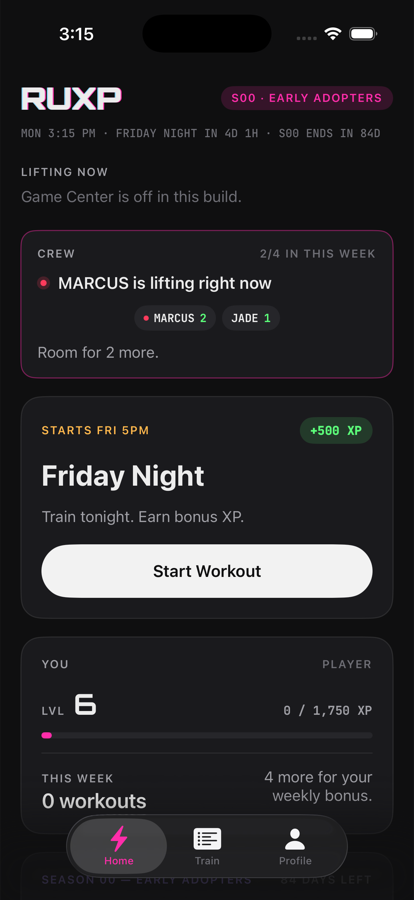
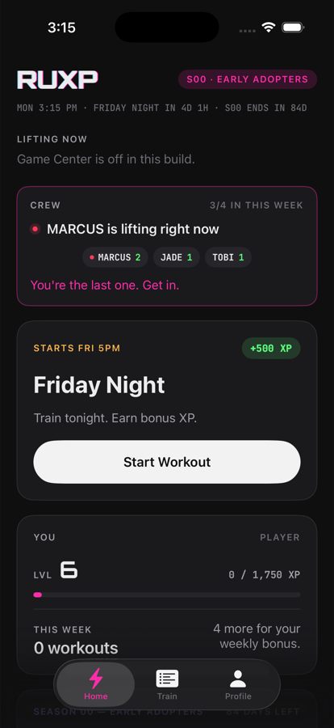
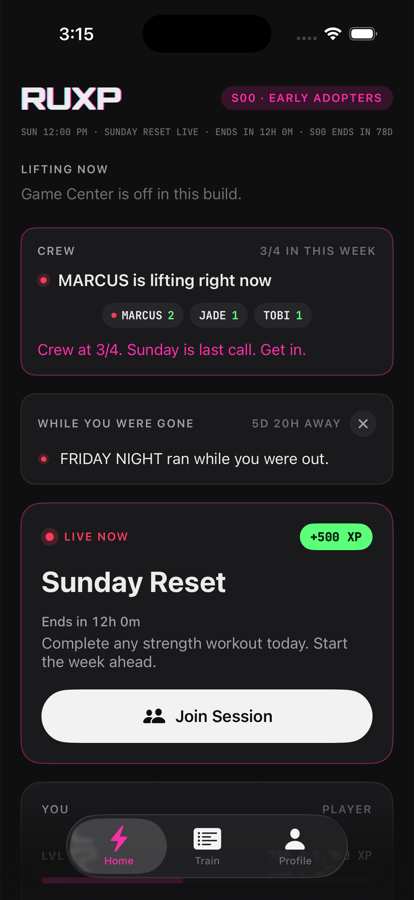
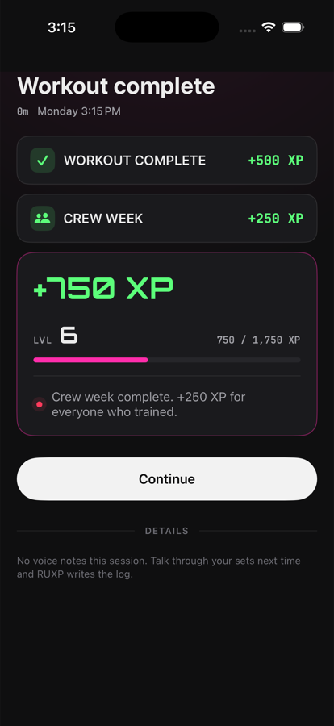
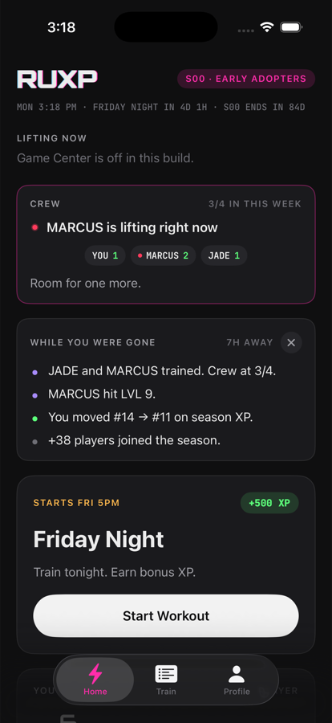
Shows who is in, never who is out. A friend who goes quiet for two weeks drops out of the crew silently and rejoins by training, so one absent person never holds the goal hostage. Captured with -RUXPCrewDemo; on a device the names are your real Game Center friends.
RUXP/Crew/CrewService.swift · RUXP/Views/Components/CrewCard.swift · GameCenterService.loadCrew
While you were gone
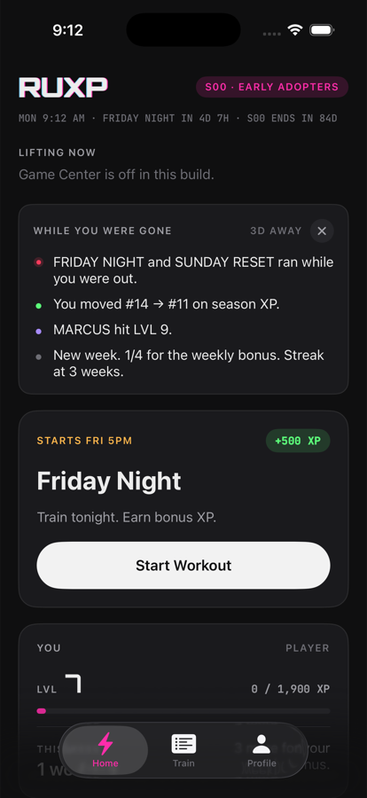
Shown after six or more hours away, above the event card, quieter than it. Up to four lines, in a fixed order: rituals that ran, your rank move, a friend who leveled up, the new week, the season closing in, new players on the season board, friends who trained.
Every line is either computed from the clock or observed from Game Center on both sides of the absence. A fact never observed is never guessed. The card does not appear when nothing changed, and dismissing it is remembered per absence.
This capture used -RUXPWorldDemo, which seeds the friend and rank facts so every line can be seen without a second Apple ID.
RUXP/World/WorldSnapshot.swift · WorldSnapshotService.swift · Views/Components/ReturnLedgerCard.swift
Live session
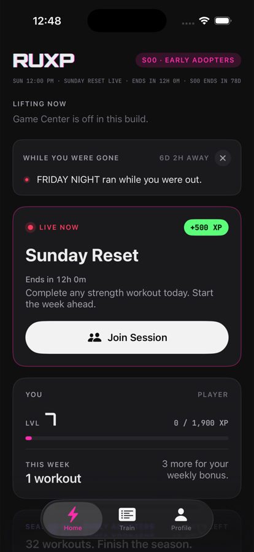
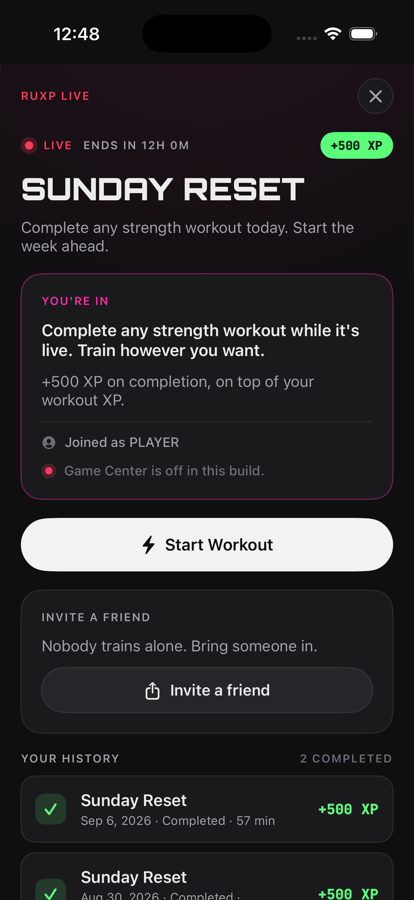
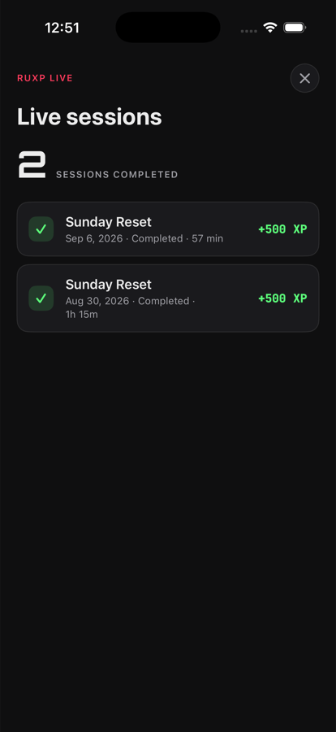
Any strength workout finished while a ritual is live completes it; starting a workout during one joins it automatically, so nobody loses XP for skipping the lobby. The Training Room is a 2–8 player Game Center real-time match with four reactions and no chat, foreground only.
RUXP/Views/LiveSessionView.swift · LiveRoomPanel.swift · LiveHistoryView.swift · RUXP/Live/ · RUXP/GameCenter/LiveRoomService.swift
Workout
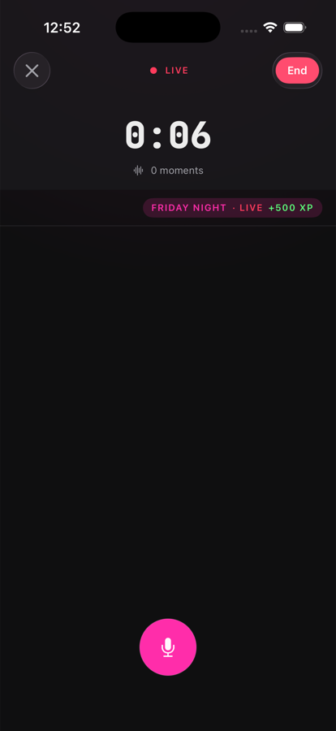
Timer, moments, the live strip ("N still lifting" and the event chip), the plan strip if a trainer plan is active, and the mic. Talk through your sets; RUXP writes the log. The watch is the better place to run this; the phone mirrors it.
While a workout is active the phone pings two staggered 30-minute Game Center boards every five minutes. That ping is what makes you count as "lifting now" for everyone else.
RUXP/Views/ActiveWorkoutTab.swift · RUXP/WorkoutManager.swift
Reward: the moment that matters
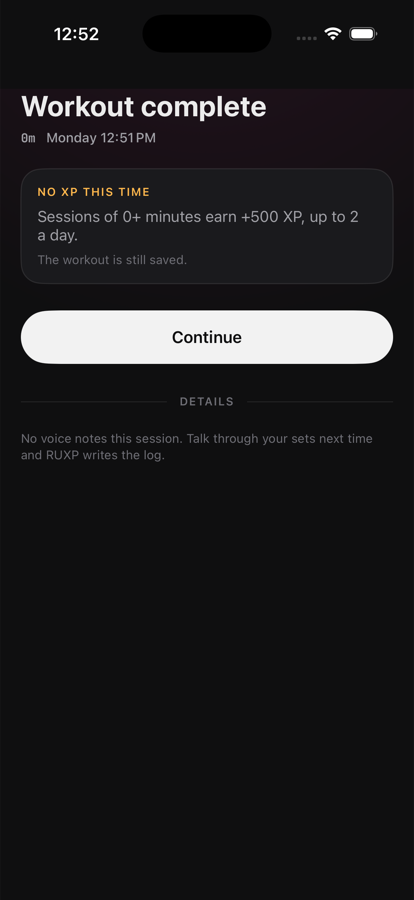
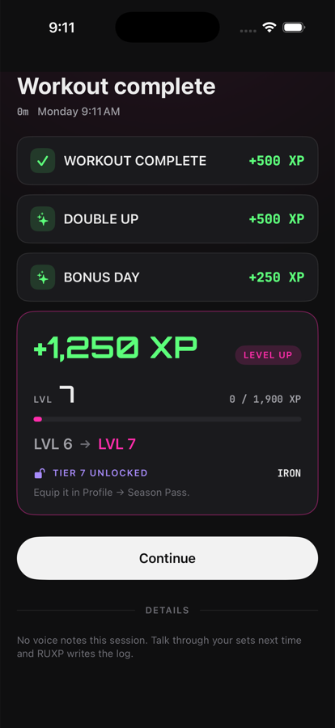
Completion XP is awarded synchronously and offline; it never depends on the OpenAI key. PR XP arrives a minute later when the notes are parsed, and slides into the open screen.
RUXP/Views/WorkoutCompletionSheet.swift · Shared/RUXP/ProgressionService.swift
Train: history
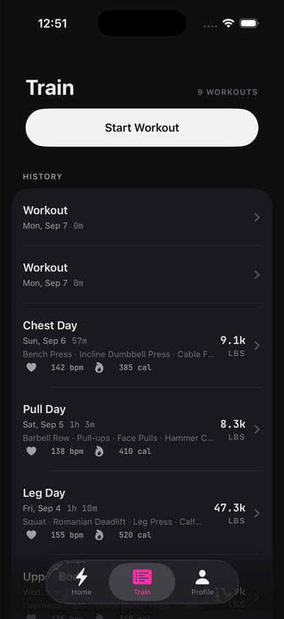
Every finished workout, newest first, with exercises, duration, heart rate, calories, and total volume. Unparsed sessions say how many voice notes are waiting. Swipe to delete. Tap for the detail view with the editable log and the transcript.
RUXP/Views/TrainView.swift · WorkoutDetailView.swift
Profile: the player card
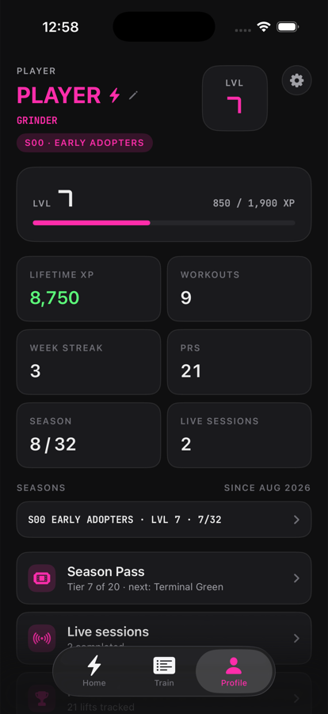
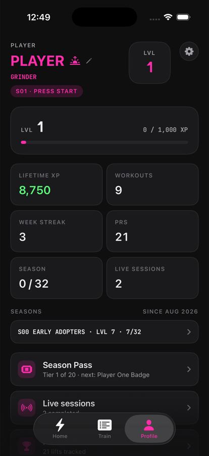
No feed, no followers. Links: Season Pass, Live sessions, Personal records, Career stats, and the four Game Center leaderboards.
RUXP/Views/ProfileView.swift
Season Pass
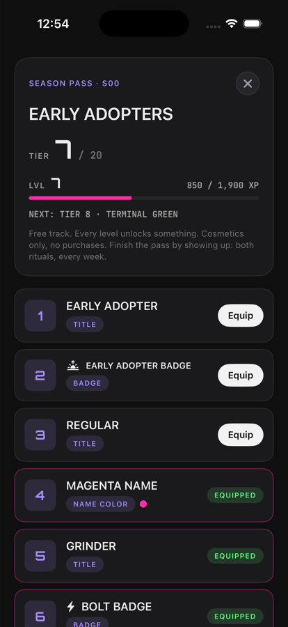
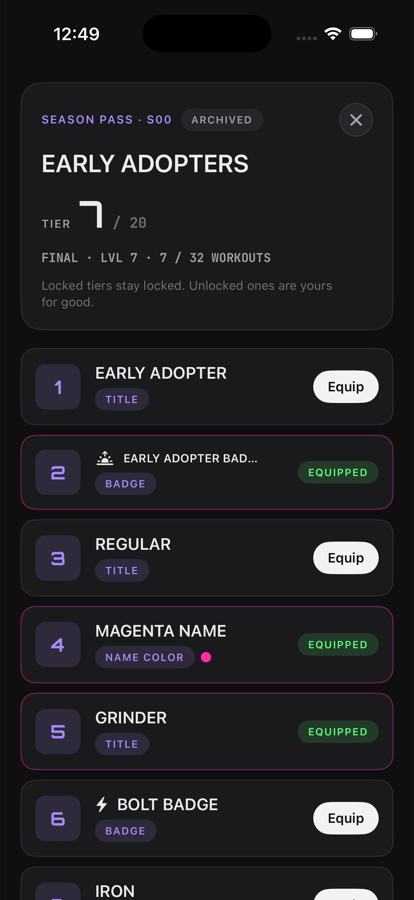
Tier 20 is about 44,650 season XP, which is roughly both rituals every week for the whole season. The pass is finished by showing up, not by grinding.
RUXP/SeasonPass/SeasonPassCatalog.swift · RUXP/Views/SeasonPassView.swift
Season recap
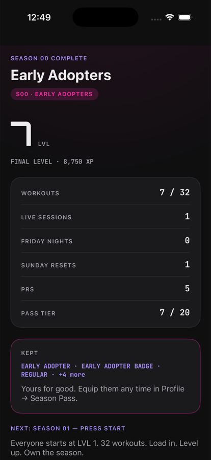
The first launch inside a new season. Final level as the hero number, then workouts against the goal, live sessions, Friday Nights, Sunday Resets, PRs, pass tier, the cosmetics you keep, and one button: Start Season 01. Shown once. A player who never trained in the old season gets no recap; an empty ceremony would be an inflated one.
RUXP/Views/SeasonRecapView.swift · Shared/RUXP/ProgressionModels.swift (SeasonRecord)
Settings
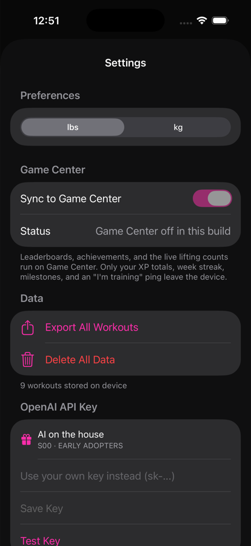
Weight unit, Game Center sync (with a plain statement of what leaves the device), export and delete, the OpenAI key ("AI on the house" during S00), and About. Debug builds add a Developer section: sample workouts, the event clock, the season override, presence counts, live ops source, the world snapshot.
RUXP/Views/SettingsView.swift
Apple Watch
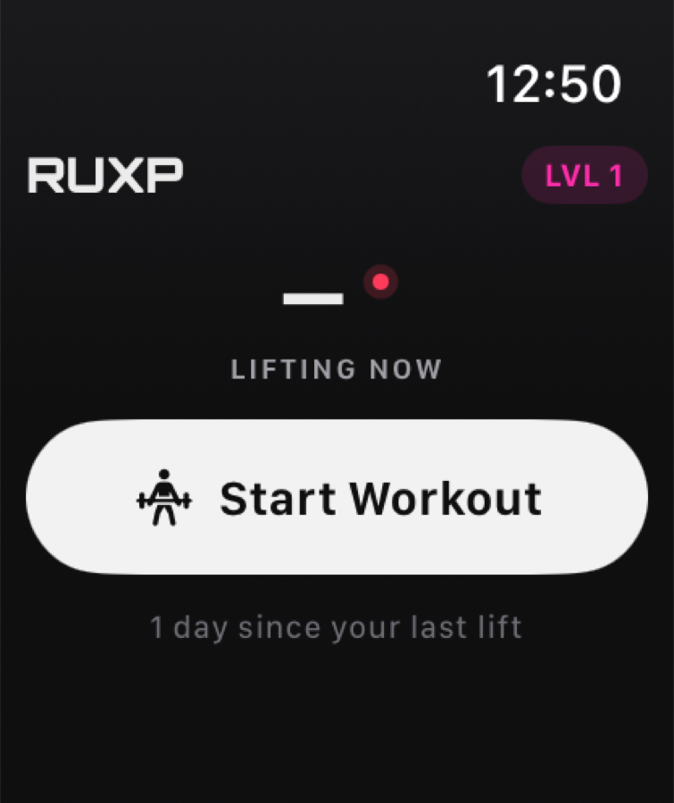
The watch is for training, not browsing: lifting-now count mirrored from the phone (a dash when stale), your level, the active ritual, Start Workout, and days since your last lift. During a workout: timer, record button, rest timer, heart rate, "N still lifting", then the XP earned once the phone syncs it. The watch never computes XP and pings presence on its own during a watch-run workout.
RUXP Watch App/Views/ · WatchWorkoutManager.swift · WatchGameCenter.swift